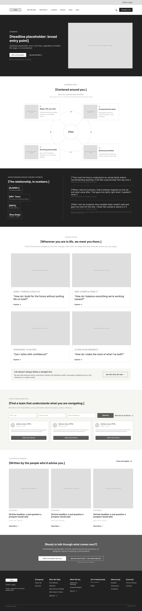
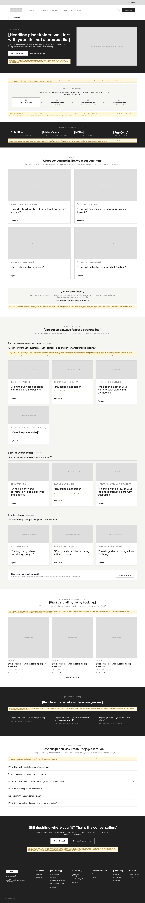
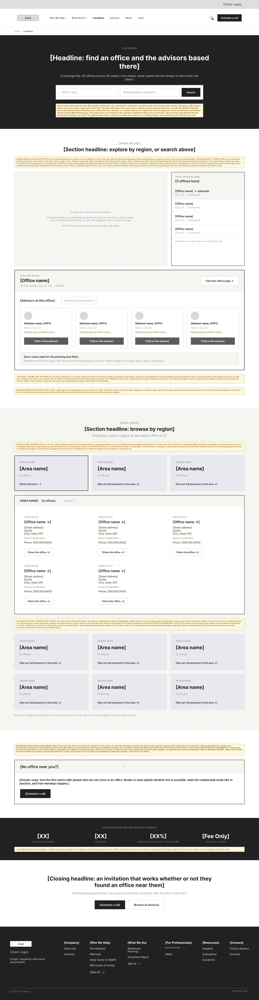
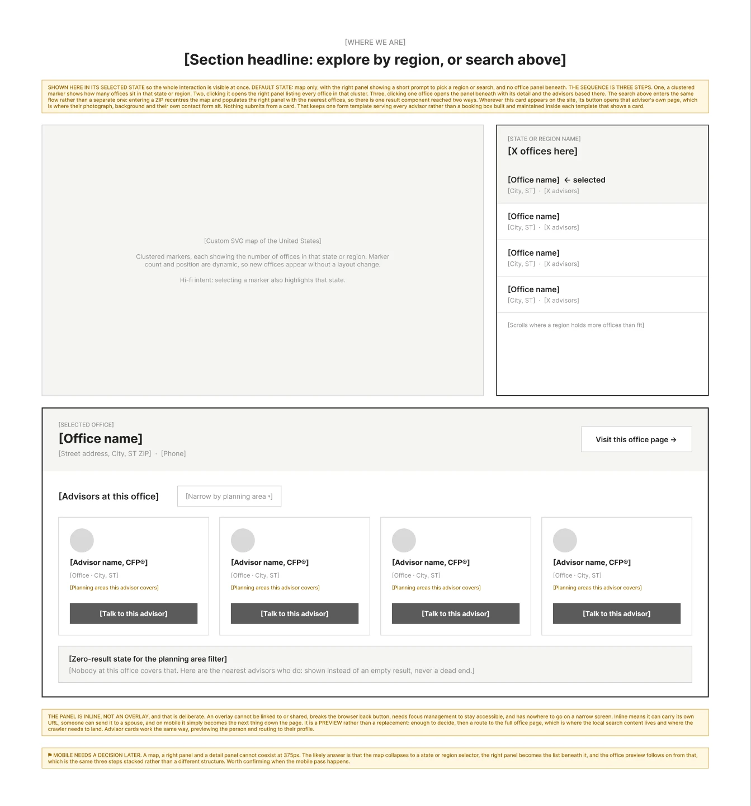

Nobody argues about a colour that is not there yet
A wireframe is not a cheaper mockup. It is the only stage where a stakeholder will discuss where something sits instead of what shade it is. These are the low fidelity stages of two projects, with the reasoning that was written next to each decision.
Why the reasoning lives in the file
Every board here carries written notes beside the thing they affect. Not a separate deck, not a verbal handover in a meeting nobody minuted. If a decision is deliberate, the file has to say why, otherwise the next person to touch it reads it as an accident and undoes it.
It also survives me. Both of these projects outlasted my involvement in them, and the note explaining why a panel expands in place rather than linking away is worth more to whoever inherits it than the panel itself.
An agency rebrand, wireframe to live build
The structure of the Evara site was resolved before a single brand decision was applied. Block structure, a mega menu that had to hold a service taxonomy without becoming a sitemap, and a set of page templates a marketing team could extend without me.


A wealth advice firm, ten page templates from one file
A national financial advice firm in the United States, redesigning its site around how people actually arrive: by life situation, by planning need, by place, or by looking for a named person. Wireframes only, at high fidelity of structure and deliberately zero fidelity of brand.
What is deliberately not shown here
The client is not named, and nothing here identifies them. Their programme name, their partner programme, their business metrics and the copyright line have been replaced in the images, and their name has been removed from the written notes. I verified that by enumerating every text layer in the file and checking each one against a blocklist, rather than looking at the pictures and hoping. If you want the unredacted version in an interview, ask, and I will tell you why the answer is no.

The interesting part of this project was never the homepage. It was proving that four different page families could share one skeleton, so a marketing team could add a new audience page or a new office without a designer.

-
It sits directly after the hero, so orientation arrives before the visitor faces fourteen choices. Step 01 is the current page, marked as you are here rather than as a link. Steps 02 to 04 are quiet links onward, deliberately subordinate text rather than four buttons, so this early in the page there is one clear path rather than four competing ones.
note on the orientation strip
-
The section ends on a clean card row boundary, so a visitor who is not one of the four gets no signal that ten more audiences exist below, a real premature exit risk. A named bridge outperforms an abstract arrow because it states what is below rather than only hinting that motion is possible.
note on the scroll bridge
-
A heading like Business Owners and Professionals is our internal taxonomy stated in our language, which asks the visitor to classify themselves before they can explore. Leading each category with a question instead turns the heading from a label into an invitation.
note on category headings
-
Stats retained here even though the homepage carries them, because this page is an entry point in its own right. Organic search lands people on audience pages directly, so it cannot assume the homepage was seen first. Every page has to stand alone on credibility.
note on repeating the trust band
-
Insights placed before testimonials on purpose: it is the low commitment escape valve for a hesitant visitor who cannot self identify, so it comes before the conversion focused run of testimonials, FAQs and closing call to action.
note on section order
The page where the money was
A locations page looks like a directory problem. It is not. Offices are concentrated in some regions and absent from others, so a measurable share of visitors search, find nothing near them, and leave. That single dead end was the most valuable thing on the page to fix.


-
The panel is inline, not an overlay, and that is deliberate. An overlay cannot be linked to or shared, breaks the browser back button, needs focus management to stay accessible, and has nowhere to go on a narrow screen. Inline means it can carry its own URL, someone can send it to a spouse, and on mobile it simply becomes the next thing down the page.
note on the office preview panel
-
Commercially this may be the most valuable element on the page: offices are concentrated in some regions and absent from others, so a real share of visitors will search, find nothing near them and leave. Silence there is a lost enquiry.
note on the no office nearby answer
-
One action only, deliberately. Someone who has just been told distance is not a barrier needs a conversation, not a directory of people they also cannot visit.
note on restraint in the same block
-
Mobile needs a decision later. A map, a right panel and a detail panel cannot coexist at 375 pixels. The likely answer is that the map collapses to a region selector, the right panel becomes the list beneath it, and the office preview follows on from that, which is the same three steps stacked rather than a different structure.
flagged as an open question rather than quietly designed around
That last one matters more than the ones above it. Flagging an unresolved problem in the file is not an admission that the work is incomplete. It is the difference between a deliverable somebody can build from and one that falls apart the first time it meets a 375 pixel screen.
What this is evidence of
Information architecture for a site with four page families and fourteen audiences. Template systems designed so non designers can extend them. Zero result and empty states designed rather than left to engineering. Interaction logic written down. Mobile drawn at mobile width. And a willingness to write the awkward note that says this part is not solved yet.